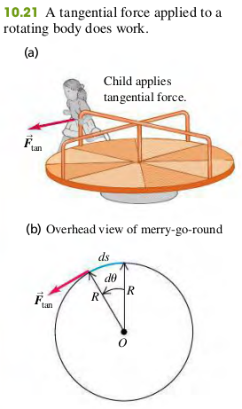

The work dW done by the force Ftan while a point on the rim moves a distance ds is dW=Ftands. If dθ is measured in radians, then ds=Rθ and
dW=FtanRdθ(1)
Now Ftan is the torque τ due to the force Ftan, so
dW=τdθ(2)
As the disk rotates from θ1 to θ2, the total work done by the torque is
W=∫θ1θ2τdθ(3)
If the torque remains constant while the angle changes, then the work is the product of torque and angular displacement
W=τ(θ2−θ1)(4)
When a torque does work on a rotating rigid body, the kinetic energy changes by an amount equal to the work done. The integrand of Eq.(3) can be transformed into an integrand with respect to ω as follows:
τdθ=(Iα)dθ=I⋅dtdω⋅dθ=I⋅dtdθ⋅dω=Iωdω
Eq. (3) then becomes
Wtot=∫ω1ω2Iωdω=21Iω22−21Iω12(5)
When we divide both sides of Eq. (2) by the time interval dt during which the angular displacement occurs, we find
dtdWP=τ⋅dtdθ=τω=τω(6)
Exercises
(10.31) A 2.80-kg grinding wheel is in the form of a solid cylinder of radius 0.100 m.
(a) What constant torque will bring it from rest to an angular speed of 1200 rev/min in 2.5 s?
(b) Through what angle has it turned during that time?
(c) Use Eq. (10.21) to calculate the work done by the torque.
(d) What is the grinding wheel's kinetic energy when it is rotating at 1200 rev/min? Compare your answer to the result in part (c).
c. W=τΔθ=0.704⋅157.1=110.5J
d. Krot=21Iω1=21⋅0.704⋅(40π)2=110.5J
(10.32) An electric motor consumes 9.00 kJ of electrical energy in 1.00 min. If one-third of this energy goes into heat and other forms of internal energy of the motor, with the rest going to the motor output, how much torque will this engine develop if you run it at 2500 rpm?
(10.33b) A drum with negligible mass, 0.400 m in diameter, is attached to the motor shaft, and the power output of the motor is used to raise a weight hanging from a rope wrapped around the drum. How heavy a weight can the motor lift at constant speed and at what constant speed will the weight rise?